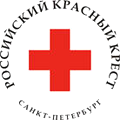

О нас
Межрегиональный общественный благотворительный фонд «За здоровое поколение на пороге XXI века» ведет работу по организации системы социально-психологической помощи и реабилитации подростков и молодежи с 1997 года.
- Основная целевая группа:
- беспризорные и безнадзорные наркозависимые и токсикозависимые несовершеннолетние, подростки из семей группы риска.
- Опосредованная целевая группа:
- ближайшее окружение (родители и несовершеннолетние), специалисты в области реабилитации и профилактики наркозависимости.
За время деятельности Фонда в различных программах приняли участие более 2000 детей и подростков, нуждающихся в социальной поддержке и помощи, 7 несовершеннолетних получили специализированную медико-социальную помощь за рубежом.
С 2002 года по заказу Комитета по молодежной политике и взаимодействию с общественными организациями в рамках реализации целевых программ Санкт-Петербурга «Комплексные меры по противодействию злоупотреблению наркотическими средствами и их незаконному обороту на 2003-2005 годы» и «Комплексные меры по противодействию злоупотреблению наркотическими средствами и их незаконному обороту на 2006-2008 годы»» фондом проводится специализированная программа реабилитации уличных наркозависимых несовершеннолетних. В ней приняли участие и успешно закончили более 160 детей и подростков в рамках стационарной программы и более 440 несовершеннолетних в рамках амбулаторной программы.
За время пребывания несовершеннолетних в центре проводится полный комплекс мероприятий по социально-психологической реабилитации. Все услуги предоставляются Центром бесплатно.
Фонд «За здоровое поколение на пороге XXI века» награжден Дипломом Губернатора Санкт-Петербурга за успешную работу в области профилактики наркозависимости и неоднократно награждался Дипломами Комитета по молодежной политике и взаимодействию с общественными организациями за вклад в реализацию молодежной политики Санкт-Петербурга.
Основные направления деятельности реабилитационного центра
- Создание системы реабилитационного поля, в которую входят Центр медицинской и социальной реабилитации детей, оставшихся без попечения родителей им. В.В. Цимбалина, детская инфекционная больница №3, Санкт-Петербургская государственная педиатрическая медицинская академия, подразделения по делам несовершеннолетних РУВД, Муниципальные советы муниципальных образований, школы, интернаты, детские дома, районные наркологические кабинеты.
- Реализация программы комплексной амбулаторной и стационарной реабилитации безнадзорных и беспризорных детей и подростков в возрасте от 8 до 18 лет.
- Организация системы социального сопровождения несовершеннолетних (восстановление семейных связей, правовое сопровождение в судах дел несовершеннолетних и т.д., совместно с ГУ «Городской центр профилактики безнадзорности и наркозависимости несовершеннолетних «Контакт»).
- Осуществление образовательной программы в сотрудничестве с образовательными учреждениями Калининского района Санкт – Петербурга (совместно с ГОУ СОШ № 633 с углубленным изучением образовательной области «Технология» Калининского района).
- Профессиональная и предпрофессиональная подготовка (совместно с ГОУ СОШ №633 с углубленным изучением образовательной области «Технология» Калининского района, Фондом возрождения культуры верховой езды «Конный цирковой театр «Мустанг»).
- Проведение программы по развитию духовных и нравственных ценностей (совместно с Православной религиозной организацией «Приход Благовещенской Пискаревской Церкви»).
- Организация работы с семьями группы риска и неблагополучными семьями (совместно с органами опеки и попечительства Муниципальных образований по месту жительства клиентов программы, ГУ «Городской центр профилактики безнадзорности и наркозависимости несовершеннолетних «Контакт»).
- Проведение программ по вакцинации детей из семей социального риска в целях профилактики гепатита В.
Партнеры
На сайте blago.ru Вы можете легко и просто сделать пожертвование в адрес нашей организации с помощью кредитной карты.
- 